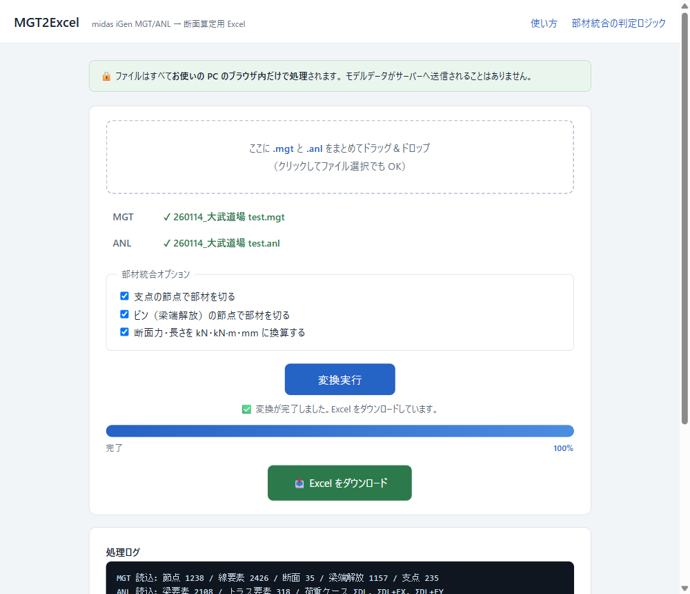

MGT2Excel の使い方 midas iGen の解析結果から、断面算定に使いやすい Excel を3クリックで作るツール
これは何をするツール？
midas iGen の MGT ファイル（モデル）と ANL ファイル（解析結果テキスト）を読み取り、 断面算定に使いやすい Excel を作ります。ポイントは、モデル上で細かく分割された直線要素を 「実際の1本の部材」に自動でまとめ、通し長さ＝座屈長さとして整理してくれること。 断面力（N・Q・M）も荷重ケースごとに部材単位の max/min に集計されます。
準備するもの（iGen 側の操作）
| ファイル | 作り方 |
|---|---|
| .mgt | iGen のメニューから ファイル → エクスポート → midas iGen MGT ファイル で保存 |
| .anl | 解析結果のテキスト出力で保存
（📷 画面付きの出力手順はこちら）。出力項目に必ず以下を含めること: ・梁要素の断面力（必須。中間点出力を有効にすると中央曲げも拾える） ・トラス要素の断面力（ブレースなどトラス要素がある場合） ・出力したい荷重ケース／荷重組合わせを選択しておく |
使い方 — 3ステップ
1ページを開く
ツールのページを開くと、変換エンジンの準備が自動で始まります（初回のみ 10〜30 秒。 「準備完了」と表示されたら OK）。
2MGT と ANL をドラッグ＆ドロップ
点線の枠に 2 つのファイルをまとめてドラッグ＆ドロップします（枠をクリックして 選択してもOK）。ファイル名の横に ✔ が付けば読み込み準備完了です。
3「変換実行」を押す → Excel が自動ダウンロード
処理ログが流れ、完了すると Excel（.xlsx）が自動でダウンロードされます。 体育館規模のモデルで数十秒、数万要素の大きなモデルでは数分かかります。 タブは閉じずにお待ちください。

できあがる Excel（4シート）
| シート | 内容 |
|---|---|
| 部材一覧 | 断面算定のメインデータ。統合された部材ごとに1部材×1荷重ケース＝1行。 断面・材料・断面性能（A・Iy・Iz・Zy・Zz・iy・iz・i min）・両端の節点と座標・ 部材長さ（＝座屈長さ）・構成要素ID（どの要素を合体させたか）・ N/Qy/Qz/Mt/My/Mz の max/min |
| 要素データ | 統合前の全要素×荷重ケース×出力位置（I・中間点・J）の断面力。部材IDで部材一覧と紐付く |
| 断面リスト | モデルに定義された断面の寸法と断面性能一覧（断面積 A・断面二次モーメント I・断面係数 Z・回転半径 i、cm 系） |
| 節点座標 | 全節点の XYZ 座標 |
単位は kN・kN·m・mm に換算済み（オプションで元単位のままにもできます）。 Rigid・ダミー材は「ダミー」列でフィルタして除外できます。
オプションの意味
| オプション | 説明 |
|---|---|
| 支点の節点で部材を切る | 支点（拘束点）の上をまたいで部材を1本にしない。座屈長さを支点間で取る（通常は ON のまま） |
| ピン（梁端解放）の節点で部材を切る | 梁端解放が設定された継手位置で部材を切る（通常は ON のまま） |
| 断面力・長さを kN・kN·m・mm に換算する | OFF にするとモデルの元単位（tonf 等）のまま出力 |
どういう条件で「1本の部材」と判定されるかの詳細は 部材統合の判定ロジック を参照してください。
よくある質問
ブレース（トラス材）の断面力が空欄になる
ANL にトラス要素の断面力が含まれていません。iGen のテキスト出力で 「トラス要素の断面力」を含めて ANL を作り直してください。 （処理ログに「断面力が無い要素が◯本あります」と表示されます）
「準備完了」にならない／エラーが出る
変換エンジンのダウンロードにはインターネット接続が必要です（初回のみ約10MB、 2回目以降はキャッシュされます）。ページを再読み込みして再試行してください。
処理ログに「警告」が出た
警告は「読めなかった・含まれていなかったデータ」を知らせるものです。内容を確認し、 必要なら iGen 側の出力設定を見直して ANL を作り直してください。警告が出ても 変換自体は続行され、読めた範囲で Excel が作られます。
断面性能（A・I・Z・i）はどうやって求めている？
MGT に記録された断面寸法から、板要素の組合せとして計算しています （H形・BH・山形・溝形・リップ溝形・丸鋼・鋼管に対応）。フィレットや角部の R を 無視するため、圧延材では JIS 規格値より数%小さい＝安全側の値になります。 山形鋼の「i min」は主軸（v軸）まわりの最小回転半径です。規格値で算定したい場合は 規格表の値に置き換えてください。未対応形状は空欄になり、断面リストに 「未対応形状」と表示されます。
断面力の値が粗い気がする
ANL の断面力は小数1桁で出力されるため、元単位が tonf の場合の分解能は約 ±0.5 kN です。 細かい精度が必要な場合は、iGen の単位系を kN にしてから ANL を出力してください。
会社のデータを外に出して大丈夫？
大丈夫です。ファイルの読み取り・変換・Excel 生成はすべてお使いの PC のブラウザ内で 実行され、モデルデータは外部に送信されません。ソースコードも GitHub で公開されており、 処理内容を誰でも確認できます。
Python で直接実行したい（上級者向け）
変換エンジンの実体は Python スクリプト mgt2excel.py です。
リポジトリから取得して py -3 mgt2excel.py model.mgt -o out.xlsx のように
CLI でも実行できます（要 openpyxl）。数万要素の大きなモデルはローカル実行のほうが高速です。